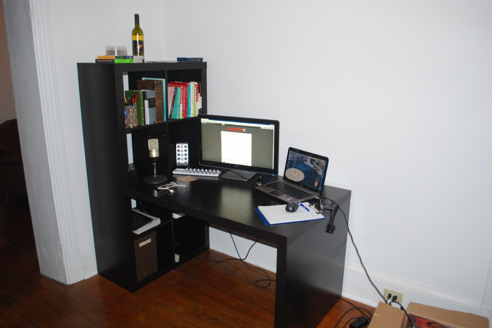
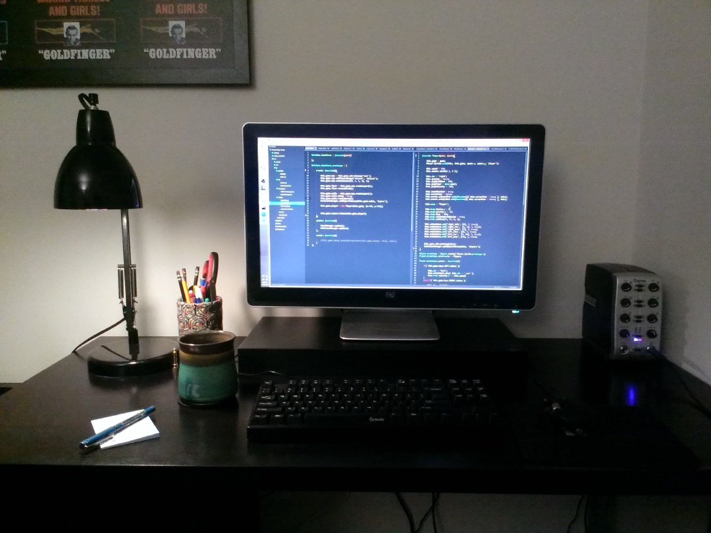
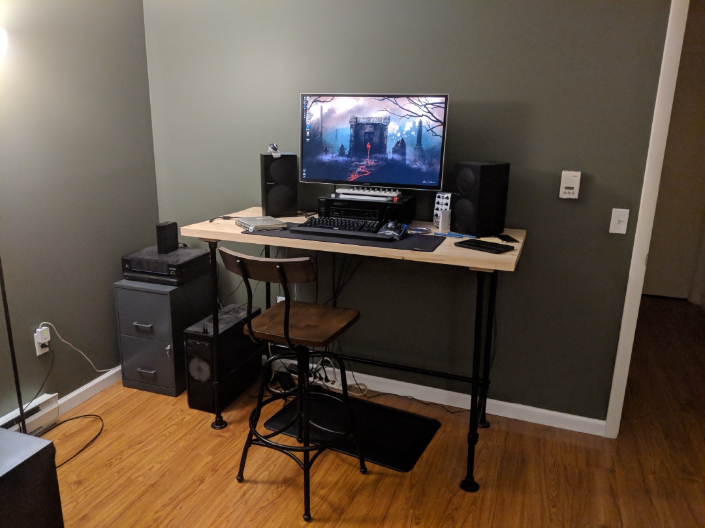
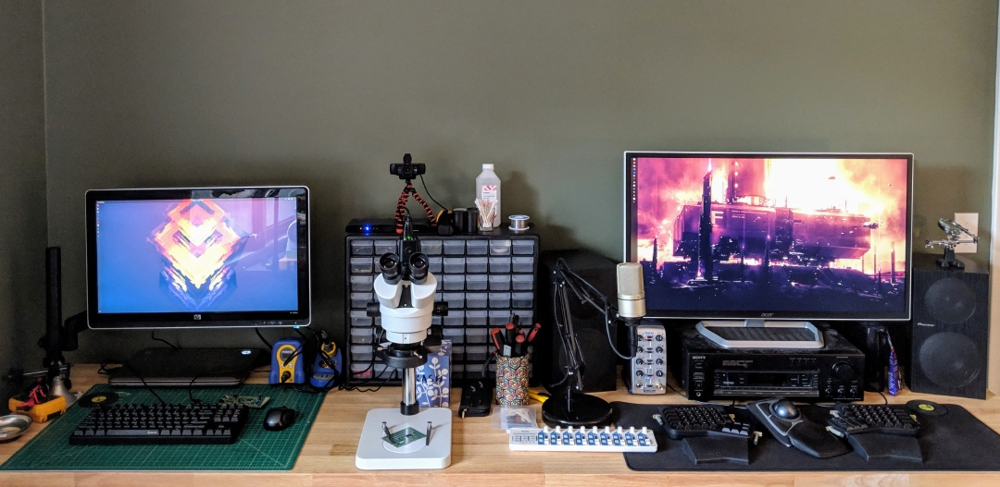
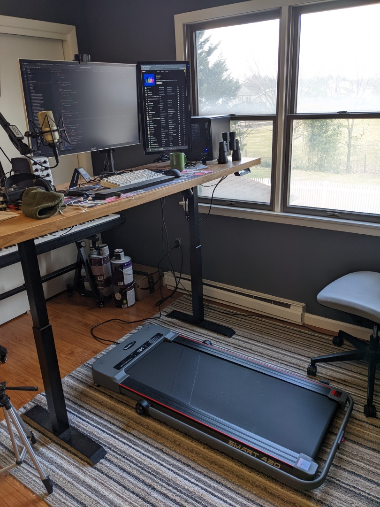
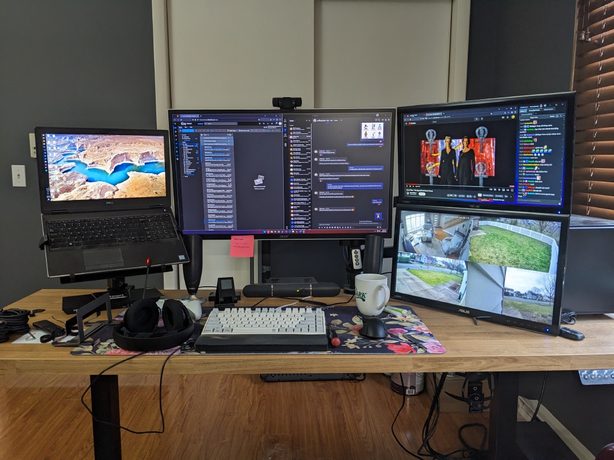

Personal PC Setup
I’ve had many different PC setups throughout the years. Here are some that I was able to find pictures of, starting with my first post-college apartment in 2012. Prior to college, my family had a few various Packard Bell, Gateway, and Dell desktops.
2012⌗
 Ikea desk, 23 inch HP monitor, 14 inch HP laptop
2014⌗
 Different Ikea desk, same HP monitor, first mechanical keyboard (Cherry MX Blue switches), Not pictured: new desktop PC with an 🌟SSD🌟
2018⌗
 New DIY desk, new 32 inch Acer monitor, same desktop PC from 2014, same mechanical keyboard but new trackball mouse
2019⌗
 New 8ft Husky Workbench desk, side-by-side computer setup with some extra electronics stuff in between, new split ergodox keyboard
2022⌗
 By this point I was working from home. New sit/stand desk and a mini treadmill. New personal desktop by the window (Ryzen 5).
2023⌗
 Work laptop on the left, same personal desktop on the far right, 32 inch main monitor and 2x21 inch aux monitors for streams & security camera feeds, new NIZ plum keyboard. This is mostly how it looks today, although I did install a keyboard tray for better ergonomics.